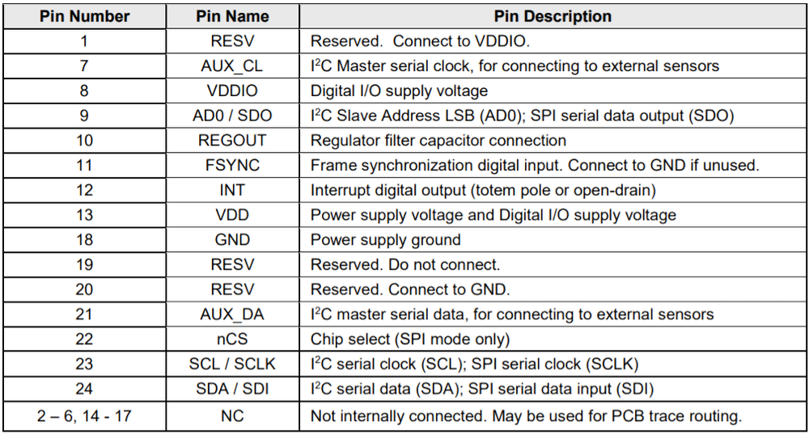
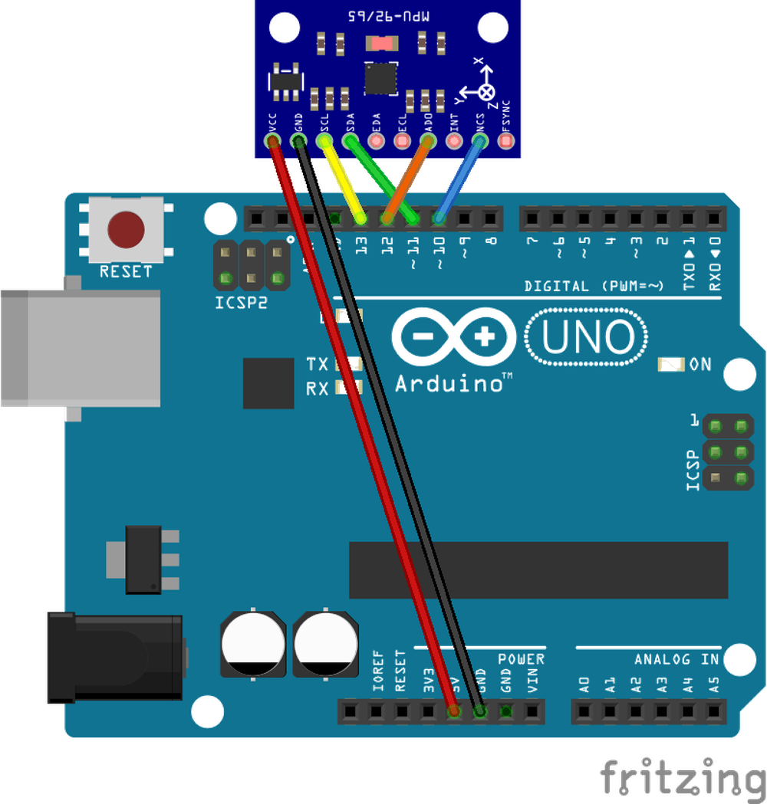
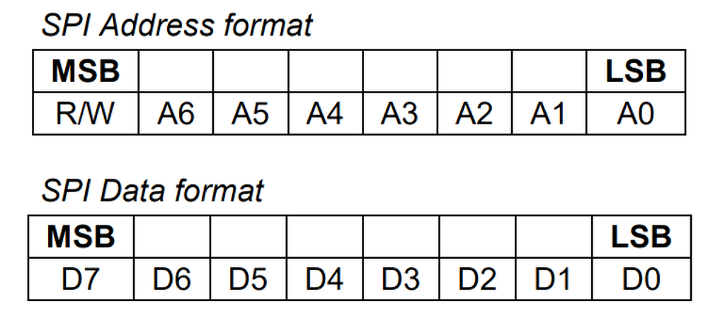

第二章——MPU9250 数据手册速览
1. MPU9250 基本参数
| 参数 | 参数值 |
|---|---|
| 供电电压 | 2.4V-3.6V |
| 通信方式 | I2C 或者 SPI |
| 通信速度 | I2C 不大于 400KHz，SPI 不大于 1MHz |
| 9 轴传感器 | 3 轴陀螺仪，3 轴加速度计，3 轴磁力计 |
| 温度传感器 | -40°C 到 +125°C |
| FIFO | 512 字节的 FIFO |
| 中断 | 支持多种模式中断 |
| 外部震荡源 | 支持外部晶振 |
| I2C 主机模式 | MPU9250 支持作为 I2C 主机，可同时连接 4 台设备 |
| DMP | MPU9250 拥有一个 DMP，可以帮助处理内部数据 |
2. MPU9250 引脚分布
| 引脚 | 介绍 |
|---|---|
| AUX_CL,AUX_DA | MPU9250 作为 I2C 主机时的 I2C 总线 |
| VDD | 供电正极 |
| AD0/SDO | I2C 模式下作为 MPU9250 的 LSB 地址选项，SPI 模式下作为 MISO |
| FSYNC | 外部震荡源输入接口 |
| INT | 中断口 |
| nCS | SPI 模式下作为 CS |
| SCL/SCLK | I2C 或者 SPI 模式下的时钟线 |
| SDA/SDI | I2C 模式下数据口，SPI 模式下 MOSI |

由于我们这一章是介绍 SPI 的通信方式，因此我们要把 MPU9250 和 Arduino 通过 SPI 的方式连接。
接线图如下：

3. MPU9250 的寄存器列表
虽然 MPU9250 有着很长的寄存器列表，但是如果我们不使用中断，不适使用外部震荡源，不使用 I2C 主机模式，不需要自我测试的情况下，MPU9250 使用还是非常简单的，只需要几个简单的配置就可以了。
值得注意的是，MPU9250 的寄存器默认值都为 0，除了以下两个：
- 0x6B(默认值 0x01)
- 0x75(默认值 0x71)
在下面的列表中，*表示这里不做介绍，具体内容可参考数据手册。下面我们介绍几个重要的寄存器。
3.1 寄存器 0x6B——PWR_MGMT_1
| Addr | Register Name | Bit7 | Bit6 | Bit5 | Bit4 | Bit3 | Bit2 | Bit1 | Bit0 |
|---|---|---|---|---|---|---|---|---|---|
| 0x6B | PWR_MGMT_1 | H_RESET | SLEEP | CYCLE | * | * | * | * | * |
该寄存器用于配置 MPU9250 的模式，Bit7 用于重置设备，Bit6 用于唤醒 MPU9250。
由于 MPU650 在上电时会进入睡眠模式，因此为了兼容 MPU9250，建议上电时对此寄存器写入0x00。
3.2 寄存器 0x6A——USER_CTRL
| Addr | Register Name | Bit7 | Bit6 | Bit5 | Bit4 | Bit3 | Bit2 | Bit1 | Bit0 |
|---|---|---|---|---|---|---|---|---|---|
| 0x6A | USER_CTRL | * | FIFO_EN | I2C_MST_EN | 2C_IF_DIS | * | * | * | * |
该寄存器用于配置 MPU9250 的功能，Bit6 用于使能 FIFO，Bit5 用于使能 I2C 主机模式，Bit4 用于使能 SPI 模式。
由于我们适用 SPI 模式，因此需要写入 0x10，其他功能不需要使能。
3.3 寄存器 0x75——WHO_AM_I
| Addr | Register Name | Bit7 | Bit6 | Bit5 | Bit4 | Bit3 | Bit2 | Bit1 | Bit0 |
|---|---|---|---|---|---|---|---|---|---|
| 0x75 | WHO_AM_I | * | * | * | * | * | * | * | * |
该寄存器用于读取 MPU9250 的 ID 值，默认值为 0x71，可以用来验证通信是否成功。
3.4 寄存器 0x1A——CONFIG
| Addr | Register Name | Bit7 | Bit6 | Bit5 | Bit4 | Bit3 | Bit2 | Bit1 | Bit0 |
|---|---|---|---|---|---|---|---|---|---|
| 0x1A | CONFIG | * | * | FSYNC_SET[2] | FSYNC_SET[1] | FSYNC_SET[0] | * | * | * |
该寄存器用于配置 FSYNC 模式。
由于我们不使用 FSYNC，写入 0x00 即可。
3.4 寄存器 0x38——INT_ENABLE
| Addr | Register Name | Bit7 | Bit6 | Bit5 | Bit4 | Bit3 | Bit2 | Bit1 | Bit0 |
|---|---|---|---|---|---|---|---|---|---|
| 0x38 | INT_ENABLE | * | * | * | * | * | * | * | * |
用于配置中断，写入 0x00，不使用中断。
3.5 寄存器 0x1B——GYRO_CONFIG
| Addr | Register Name | Bit7 | Bit6 | Bit5 | Bit4 | Bit3 | Bit2 | Bit1 | Bit0 |
|---|---|---|---|---|---|---|---|---|---|
| 0x1B | GYRO_CONFIG | * | * | * | GYRO_FS[1] | GYRO_FS[0] | * | * | * |
该寄存器可以设置陀螺仪的测量范围，下面是范围设置表：
| GYRO_FS[1] | GYRO_FS[0] | 范围 |
|---|---|---|
| 0 | 0 | ±250°/s |
| 0 | 1 | ±500°/s |
| 1 | 0 | ±1000°/s |
| 1 | 1 | ±2000°/s |
3.6 寄存器 0x1C——ACCEL_CONFIG
| Addr | Register Name | Bit7 | Bit6 | Bit5 | Bit4 | Bit3 | Bit2 | Bit1 | Bit0 |
|---|---|---|---|---|---|---|---|---|---|
| 0x1C | ACCEL_CONFIG | * | * | * | ACCEL_FS[1] | ACCEL_FS[0] | * | * | * |
该寄存器可以设置加速度的测量范围，下面是范围设置表：
| ACCEl_FS[1] | ACCEL_FS[0] | 范围 |
|---|---|---|
| 0 | 0 | ±2g |
| 0 | 1 | ±4g |
| 1 | 0 | ±8g |
| 1 | 1 | ±16g |
3.7 寄存器 0x3B
从 0x3B 到 0x40 这六个寄存器用于存储加速度 X 轴，Y 轴，Z 轴的信息，每轴都是16 位的有符号 ADC 数据，数值实际范围由 ACCEL_CONFIG 控制。
3.8 寄存器 0x43
从 0x43 到 0x48 这 6 个寄存器用于存储陀螺仪 X 轴，Y 轴，Z 轴的信息，每轴都是16 位的有符号 ADC 数据，数值实际范围由 GYRO_CONFIG 控制。
3.9 寄存器 0x41
从 0x41 到 0x42 这两个寄存器用于存储温度的信息，是一个16 位的有符号数据。
温度转换公式为：TEMP_degC = ((TEMP_OUT –RoomTemp_Offset)/Temp_Sensitivity)+ 21degC
简化公式为：TEMP_degC = (TEMP_OUT-0)/321.0 +21
4. MPU9250 的 SPI 通信
由 MPU9250 数据手册可知，其 SPI 通信的CPOL=0，CPHA=0，属于 SPI 的模式 0，最大通信速度时1MHz。
需要注意的是，MPU9250 的 SPI 通信需要在地址位的 MSB 加入读写位，1 表示读数据，0 表示写数据，示意图如下：

下一章，我们将学习如何通过 SPI 对 MPU9250 进行读写操作。